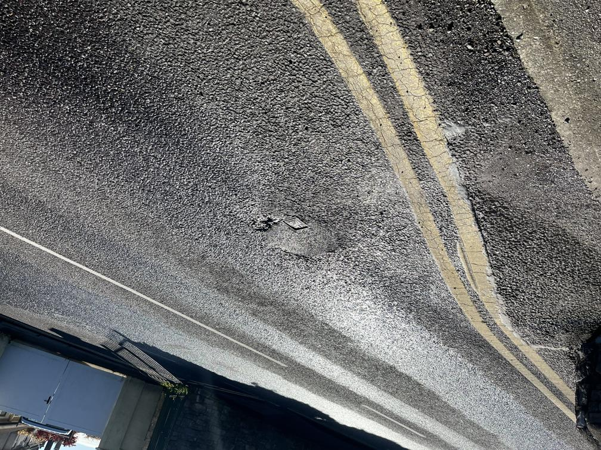
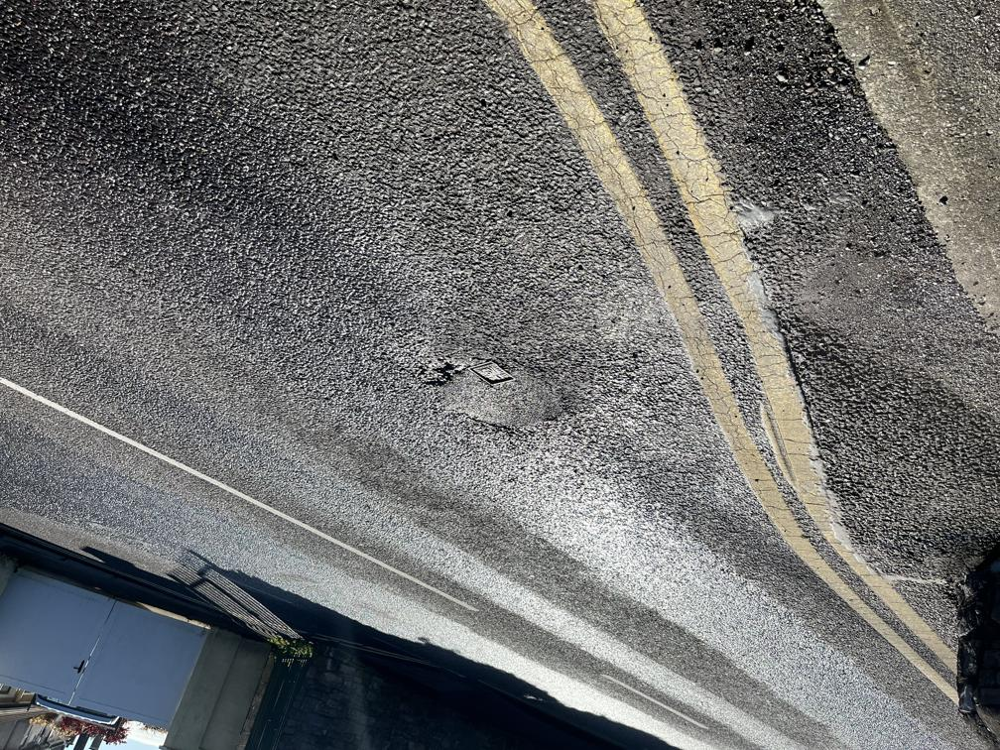
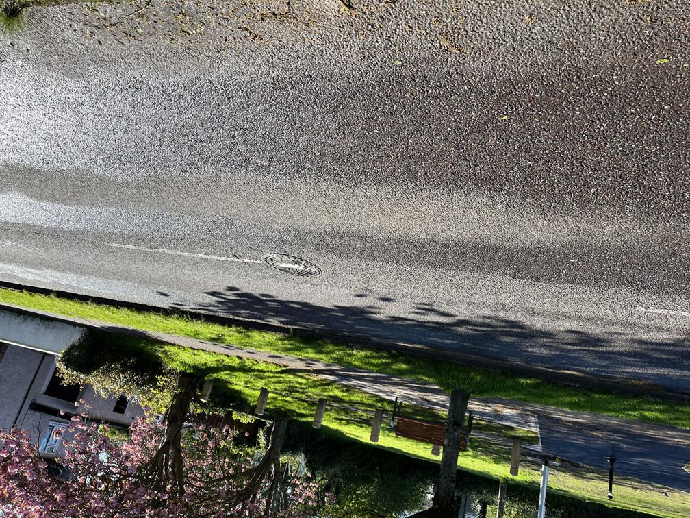
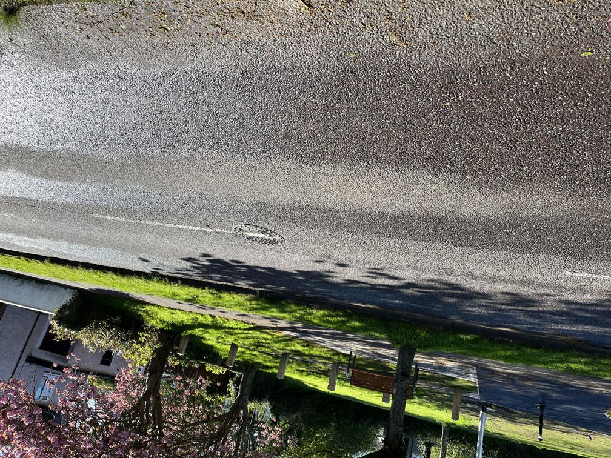
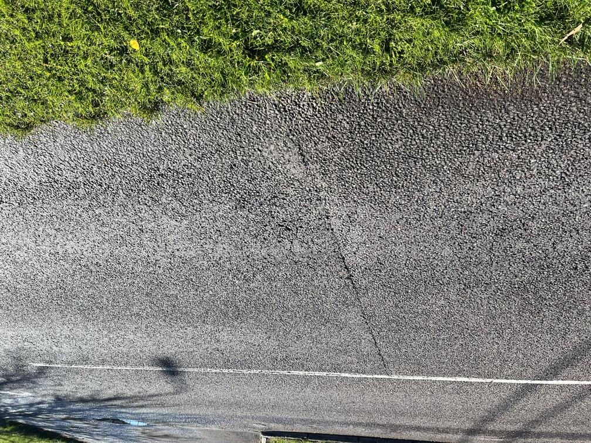
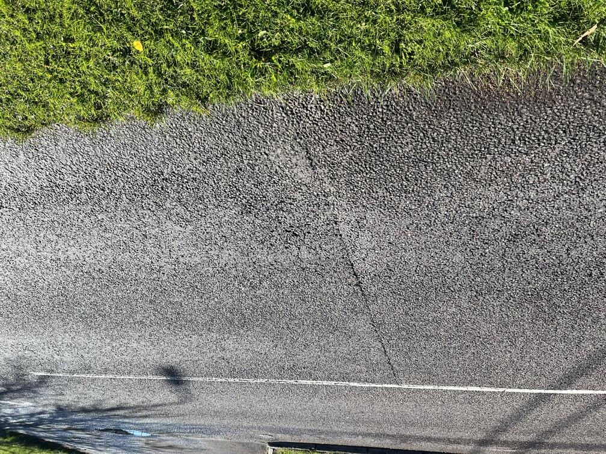

Welcome
RoadPhone is a research project funded by Science Foundation Ireland (SFI). It is run by Insight SFI Research Centre for Data Analytics, UCC and the School of Engineering and Architecture, UCC in collaboration with McCurdy Associates Consulting Engineers Ltd.
The RoadPhone project aims to provide a novel low-cost solution for near real-time raod pavement health monitoring using smartphones, thus mitigating the risk of cascading road failure and reducing road repair costs whilst improving transportation safety, economic efficiency and sustainability.
News & Events
We are presenting RoadPhone system at iCRAG Summit on 20th of June, 2023.
The 4th International Symposium of Machine Learning and Big Data in Geoscience (ISMLG 2023) will be held at University College Cork, Ireland from the 29th of August to the 1st of September 2023. Dr. Zili Li has been appointed as the chair of the symposium.
Road investigation
 



 

 

News & Events
We are presenting RoadPhone system at iCRAG Summit on 20th of June, 2023.
The 4th International Symposium of Machine Learning and Big Data in Geoscience (ISMLG 2023) will be held at University College Cork, Ireland from the 29th of August to the 1st of September 2023. Dr. Zili Li has been appointed as the chair of the symposium.
Who are we?
-
Dr Zili Li
PI; Senior Lecturer
School of Engineering and Architecture, UCC -

Dr Andrea Visentin
Co-PI; Lecturer
School of Computer Science, UCC -

James Loney
Societal Champion
McCurdy Associates Consulting Engineers Ltd
-

Dr Kai Zhao
Postdoctoral researcher
School of Engineering and Architecture, UCC -
Dr Javed Ahmed
Research fellow
School of Engineering and Architecture, UCC